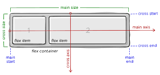
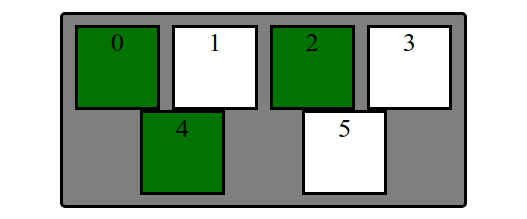
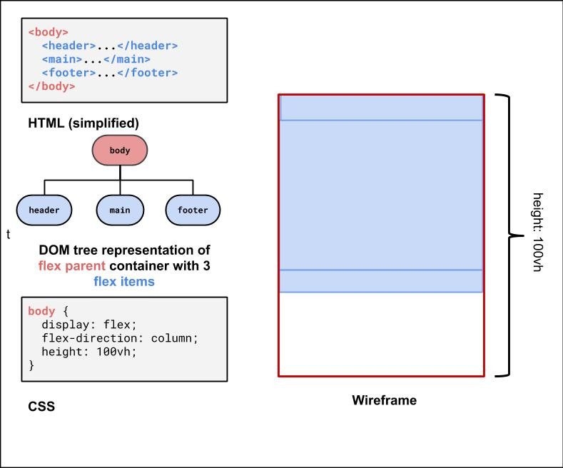

Source: reddit.com/r/ProgrammerHumor
Moral of the story: CSS has a notorious reputation (mostly pre-flex), but it is important and you bring a lot of value to a full-stack team if you can figure out responsive layout (with good practices).
Meanwhile... you can now appreciate some CSS in-real-life: r/css_irl
Can you rotate elements using CSS?
rotate value (example with our question box from Wednesday)How do I remember all of these CSS properties???
How do I know if an HTML element is block or inline?
An example of poor HTML tags, layout, and accessibility (try resizing the page). The "old days" of layout. I tried Chrome Vox. It froze. I tried this DOM tree extension. I died a little inside.
This is the official HealthCare.gov webpage in 2018, where all kinds of users rely on for health care information.
Some visually-impaired users need larger font sizes on the screen.
What happens to the search bar when you increase the font size?
As a client, have you ever left a website (that may be useful) because of the layout or accessibility?
There's a lot of very cool research on verifying page layout!
Today, we'll learn the fundamentals of various layout techniques to go from...
These are what we expect you to focus on, roughly in order of prioritization
Question: What does this look like on a webpage by default?
<div id="container">
<div>1</div>
<div>2</div>
<div>3</div>
<div>4</div>
<div>5</div>
<div>6</div>
</div>
We'll have some basic CSS already implemented to focus on layout practice today.
When learning CSS layout, you'll find there are many ways to layout your pages.
"Boxes" are great to practice with for comparing different layout strategies and better understanding the box model.
We are also working with text inside of each div to demonstrate block vs. inline layout.
In practice, it's useful to:
A way to remove elements from the normal document element flow, usually to get other elements to "wrap" around them.
Can float left, right (no center)
The blue block is a non-floating (regular) block element (a div). It's only 100px wide, but
since it's a block element, the browser positions it on its own line (spanning the width
of the page)
See the Pen Box - No Float by Melissa Hovik (@mehovik) on CodePen.
Now the blue block has the float CSS property set to left. This tells the browser
to give the element as much space as it needs, and then start bringing the next content up from below
and fill in remaining space.
See the Pen Box - Float by Melissa Hovik (@mehovik) on CodePen.
Add overflow: auto; to make a parent of a floating element contain the floated element.
Add clear: both; to make a subsequeent block element (e.g. p) start a new block line.
Make boxes into a row instead of a column
One possible solution: "Float" the boxes left or right. Another solution: Set display: inline;
What happened when we just add float: left?
Hint: Use overflow: auto to ensure container adjusts height if
contents "overflow" outside of the borders.
Extra Practice: Center the box container on the page and change width to 75%.
Can we float? Unfortunately, can't center float element cleanly.
Idea: Use block property that the container spans width of the page. But if the container is 75% of the page width... where does that extra spacing come from?
For block elements that have a specified width, you can center
them by setting left and right margins to auto.
How could we distribute boxes across box container evenly (equal space between each box)?.
... what should we do about the margins of the boxes?
display PropertyThe display property specifies the display behavior (the type of rendering box) of an element. The four values you most often will see are:
inline: Displays an element as an inline element, spanning the width/height of its content.
Any height and width properties will have no effect.block: Displays an element as a block element. It
starts on a new line, and takes up the width of the parent container.none: The element is completely removed.flex: Displays an element as a block-level flex container.Flexbox is a set of CSS properties for aligning block level content.
Flexbox defines two types of content - "containers" and "items".
Anything directly nested inside of a flex container becomes a flex item.
Various properties on the container can be set to determine how its items are laid out.
display: flex; justify-content: flex-end; (flex-start, space-around,...)align-items: flex-end; (flex-start, center, baseline,...)flex-direction: row; (column)flex-wrap: wrap; (no-wrap, ...)It is less common to add flex properties to flex items, but on occasion you will need to.
flex-grow: <number>flex-basis: 20%; (3em, 50px,...)align-self: flex-end; (flex-start, center, stretch,...)Exercise: Distribute boxes across box container evenly (equal space between each box).
Set boxes to wrap when box container gets too small in the browser so that they keep their square widths (what happens when you shrink the browser width in the previous exercise?).
Layout boxes into two 3-box columns using flex (use screenshot with given details). Note: don't rely too much on previous CSS solutions - you'll need to change the HTML slightly as well to get the columns grouped)
#container to 500px and center the columns
vertically#container.How can we use these different layout methods in pages with components like header, main, footer? What about side-by-side sections? Inline navigations with lists?
What are the parent "containers" distributing items in a row/column?
body (column with 3 children)#item-container (row with 5 children)#top-bar header (row with 2 children)We'll take an "outside-in" approach, starting with the body
Demo
For the body, we know we want a column.
We already get a column layout from the default block display
for header, main, footer.
But by default, these elements will have a height defined by their contents. This will result in whitespace at the bottom of the page.
We can use flex to control the distribution of the body's children to fill the entire page!
Many page layouts desire a full viewport height (vh) with a footer at the bottom.
To set the body to be 100% of the view port height, use the vh size unit.
Next, we can use flex-grow: 1 on the child element of the body flex container to have that child fill any remaining whitespace
(the default for flex-grow for all items is 0). Let's make the main child fill the rest of the whitespace of the parent.
#item-containerThis is the div that holds all of the product article "cards".
It would be nice to have some control over their distribution, and wrap them when the screen gets smaller.
<div id="item-container">
<article>...</article>
<article>...</article>
<article>...</article>
<article>...</article>
<article>...</article>
</div>HTML
What's type of flex container is #item-container? (Demo)
#item-container Solution<header id="top-bar">
<h1>...</h1>
<nav>...</nav>
</header>HTML
This is a bit of a trickier one, so it's good to do it last. We want to make it a flex row
so we can get a nice distribution of space between the h1 adn the nav.
We'll also make the #top-bar a sticky nav bar, so it sticks to the top when you scroll down!
With careful planning, we can combine different layout techniques like display: flex; and postion: sticky.
Let's take a look more closely at the CSS position property.
position: staticposition: fixedposition: absoluteposition: relativeposition: stickyAnother good explanation is here
position: sticky for a header/footerA sticky element toggles between relative and fixed depending on the scroll position - is fixed when a given offset position (e.g. top of 0) is met in the viewport
See the Pen Sticky Examples by Melissa Hovik (@mehovik) on CodePen.
See the Pen Positioning by Melissa Hovik (@mehovik) on CodePen.
See the Pen Relative Positioning by Melissa Hovik (@mehovik) on CodePen.
Start with a wireframe and DOM tree. Only use containers when needed - it's easy to over-do it!
First thought: Box Model, text-align, vertical-align
Next thought: Flex box. Powerful way to build many different layouts on a page.
Special use:
After-thought: don't force layout if you don't need - sometimes you can accomplish layout just using the flow of the page elements (e.g. a column layout)
Flexbox layout is a way to make responsive, "flexible" websites much more easily. Strategy for using flex as a beginner:
display: flex on the parent item, then:
flex-direction if you want to override the default row
layout to column, row-reverse, or
column-reverse
justify-content and
align-items to distribute the child elements
flex-wrap to wrap children cleanly in a
constrained-width parent container
flex-growon the items to specify how much space of the container each
thing should take up
Walkthrough of various layout methods
Flexbox Ducky! A CSE 154 game adapted from Flexbox Froggy